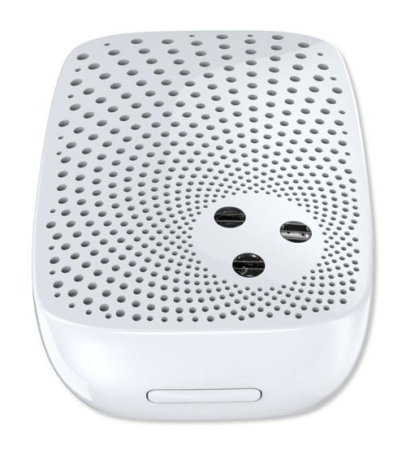
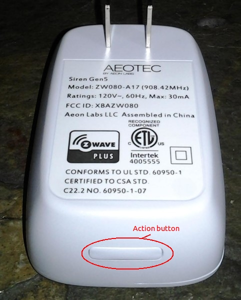

Aeon Labs Gen 5 siren for indoors¶

How to add to VENUS app¶
To add device to VENUS, below actions are required:

Press “Add button” (button ‘+’) in app
Reset device:
+ Plugin device to power supply socket
+ Short press and quickly release Action Button, LED will blink in 3 seconds
Wait for VENUS scan & detect this device and inform in app
Configuration description¶
- Associating different tones with difference events
- Type 1: relevant to intruder alerts
- Type 2: relevant to the likes of medical emergencies
- Type 3: relevant to the likes of medical emergencies continuosly
- Type 4: relevant to the likes of water leaks
- Type 5: relevant to the likes of and door chimes
- Volume level
- Low
- Medium
- High
Factory reset¶
Press and hold the Action Button for 20 seconds and then release it. Your Siren will now be reset to its original settings, and the speaker system will sound for 3 seconds as a confirmation.